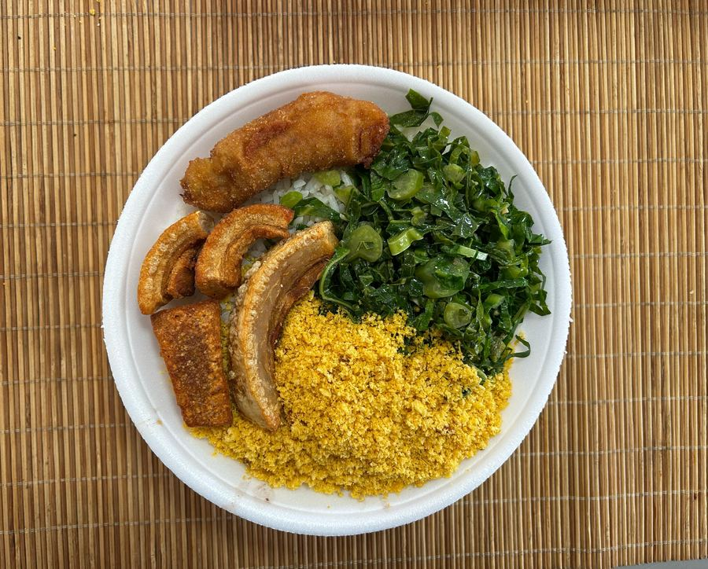

No W.A Marmitex Gourmet, cada prato é preparado no dia com ingredientes frescos e muito cuidado do jeitinho que se faz em casa, mas com aquele capricho de restaurante.
Trabalhamos de segunda a sexta, sempre com um cardápio novo, pensado pra ser gostoso, farto e no ponto certo.

Nosso cardápio muda todo dia! As fotos abaixo são exemplos de pratos que já saíram da nossa cozinha — o cardápio de hoje você confere direto no WhatsApp ou no app de entrega.
Marmitas a partir de R$ 25,00
Av. Bulgária, 92 — Jardim São Luís
Santana de Parnaíba — SP